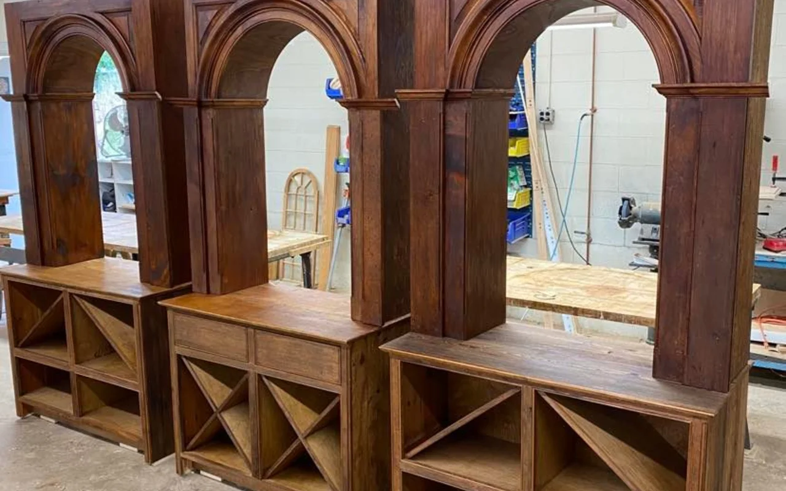
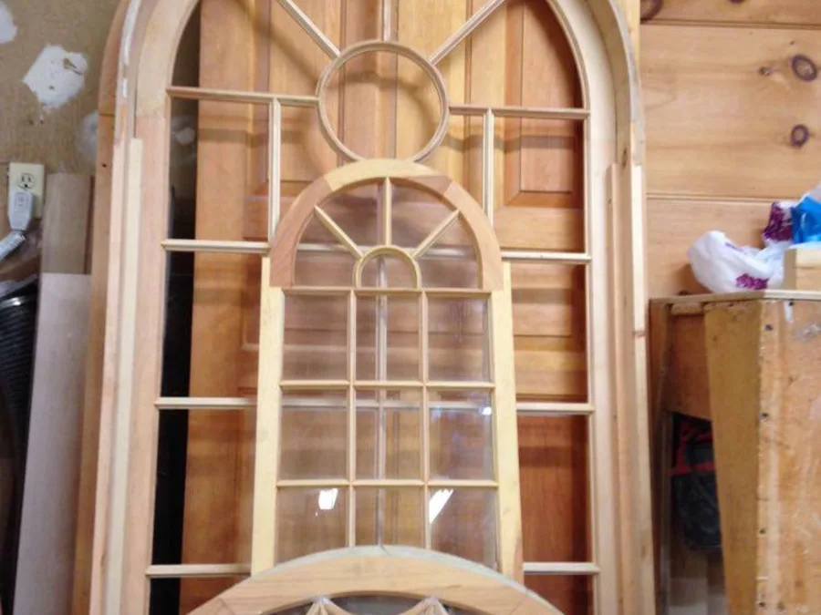
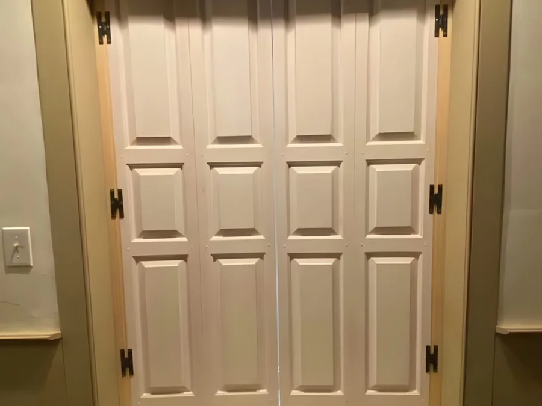
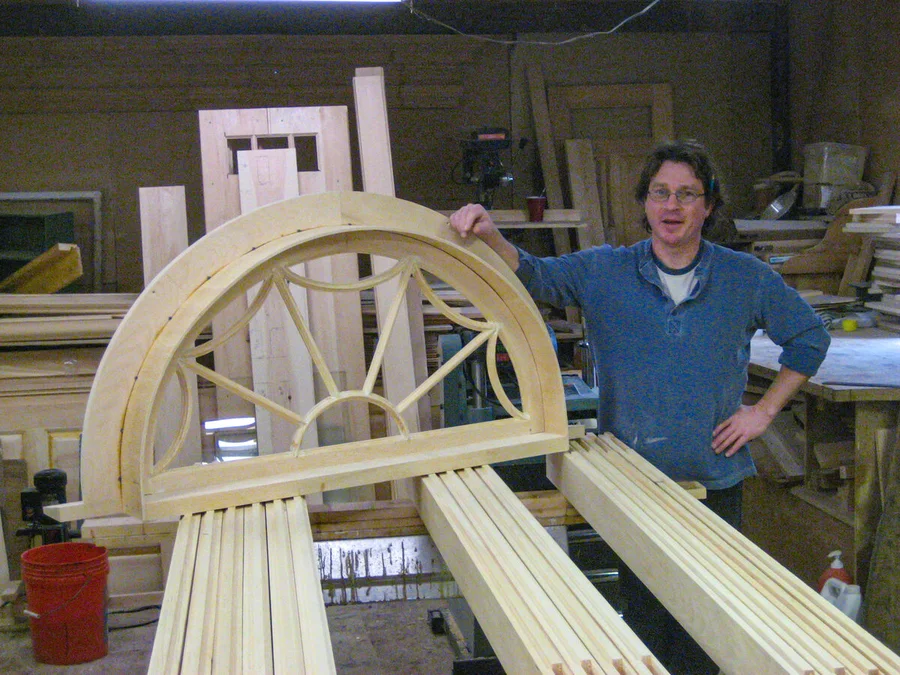

Free sample · Demo content system
Turning woodworking projects into posts, reels, and a simple content plan.
A free, end-to-end example built from one real shop's existing work: five content pillars, ten reel ideas, ten post ideas, a four-week calendar, a shot list, and a caption bank. It shows the full range of what a content system looks like — your $500 Starter Pack is a focused selection of it, built around your business.
This is a sample package based on a woodworking business. The same structure can be adapted for contractors, makers, restaurants, real estate teams, and other local service businesses.

The craftsmanship is real. The content is scattered.
A woodworking business has strong work to show — finished furniture, repair projects, shop process, before-and-after photos, tools, materials, and customer stories.
But that material is usually scattered across phones, folders, text messages, old posts, and jobsite photos. The result is that good work does not always become visible content.
Finished pieces never become project spotlights.
Process videos stay buried on a phone.
Customers don't understand how much skill goes into the work.
Posting only happens when someone remembers.
The goal isn't more random posts. It's a simple plan.
Instead of posting whenever someone remembers, the shop gets a plan it can follow: themes to post about, short video ideas with scripts, ready-to-use captions, a list of what to film, and a four-week calendar built around work it's already doing.
- Project photos + shop clips + website copy + finished work
- Content pillars + reel ideas + caption starters
- Shot list + posting calendar
- A simple system the business can keep using


Content pillars
Five repeatable categories to post from, instead of starting from scratch every week.

Finished Work
Completed furniture, cabinetry, repairs, restoration, and custom pieces.
Why customers care: people want to see the final quality before they trust someone with their home.
Example post: a finished cabinet with a short story about the material, the problem solved, and where it will live.

Process & Craftsmanship
Sanding, fitting, joinery, finishing, measuring, hand tools, and shop process.
Why customers care: the process shows the care behind the work and why custom work has value.
Example post: a 20-second reel of a rough piece becoming a cleaner finished detail.
Before / After
Damaged pieces, worn finishes, old spaces, repair jobs, and final transformations.
Why customers care: before-and-after is easy to understand and helps people imagine their own project.
Example post: a carousel with the original piece, repair steps, and the finished result.

Traditional Style & Materials
Wood types, historic inspiration, 18th-century details, hardware, and finishes.
Why customers care: it teaches people what makes the work different from mass-produced furniture.
Example post: a short educational post on why a certain wood or finish was chosen.

Shop Trust & Local Story
The person behind the work, the shop, tools, local jobs, and behind-the-scenes updates.
Why customers care: local customers hire people they trust — this makes the business feel human.
Example post: a casual shop photo with a note about what's on the bench this week.
Reel ideas
Simple, phone-friendly reels. No big production setup required.
From Rough Board to Finished Detail
“This starts as rough wood. Here's what it becomes.”
- Footage
- Rough board, measuring, cutting, sanding, finished close-up.
- Length
- 15–25 sec
- CTA
- “Have a piece or project in mind? Send a photo.”
Why Custom Work Takes Time
“This is why custom woodworking isn't instant.”
- Footage
- Measuring, dry fitting, detail work, finish coat.
- Length
- 20–30 sec
- CTA
- “Worth doing right usually takes a little more care.”
Before / After Repair
“Don't throw it out yet.”
- Footage
- Damaged piece, repair process, final result.
- Length
- 15–30 sec
- CTA
- “Have an old piece that needs a second life?”
One Tool, One Job
“This tool does one thing really well.”
- Footage
- Tool close-up, tool in use, result.
- Length
- 15–20 sec
- CTA
- “Follow for more workshop details.”
The Detail Most People Miss
“Most people miss this detail, but it changes the whole piece.”
- Footage
- Detail close-up, comparison shot, finished piece.
- Length
- 15–25 sec
- CTA
- “Small details make custom work feel finished.”
Shop Bench This Week
“Here's what's on the bench this week.”
- Footage
- Wide shop shot, 2–3 active projects, hands working.
- Length
- 15–20 sec
- CTA
- “Local project spots available.”
How a Finish Changes the Wood
“Watch what happens when the finish hits the wood.”
- Footage
- Unfinished wood, finish application, reveal.
- Length
- 10–20 sec
- CTA
- “Finish choice matters.”
Historic Style, Modern Home
“Traditional details can still fit a modern home.”
- Footage
- Historic-inspired detail, finished install, close-ups.
- Length
- 20–30 sec
- CTA
- “Custom work can match the house instead of fighting it.”
Three Signs a Piece Can Be Saved
“Before replacing it, check these three things.”
- Footage
- Old furniture/woodwork, close-up damage, repairable areas.
- Length
- 25–35 sec
- CTA
- “Send a photo if you're not sure.”
Finished Piece Walkaround
“A quick look at the finished piece.”
- Footage
- Slow pan, detail close-ups, final wide shot.
- Length
- 15–25 sec
- CTA
- “Custom woodworking for homes, repairs, and one-of-a-kind pieces.”
Post ideas
Posts that explain the work and build trust — something useful to share when there's no new reel ready.
Before / after project carousel
Original piece, repair steps, finished result.
Finished piece spotlight
One strong photo, a short story about the build.
“What's on the bench this week?”
Casual shop shot of active projects.
Tool close-up post
One tool, what it does, why it matters.
Material spotlight
The wood or hardware chosen, and why.
Customer question answered
Answer a real question people ask.
Repair vs. replace explanation
When to save a piece, when to rebuild.
Historic detail education
An 18th-century detail explained simply.
Shop-life photo
The space, the tools, the day-to-day.
Custom project process breakdown
A few slides from start to finish.
Sample 4-week posting calendar
Intentionally manageable: three posts per week, built around work the business is already doing.
Week 1
- ReelFrom Rough Board to Finished Detail
- Static postFinished piece spotlight
- Trust postWhat custom work actually includes
Week 2
- ReelBefore / After Repair
- Static postTool close-up
- Trust postCustomer question answered
Week 3
- ReelShop Bench This Week
- Static postMaterial spotlight
- Trust postHistoric style detail
Week 4
- ReelFinish reveal
- Static postBefore / after carousel
- Trust postRepair vs. replace explanation
What to film next
The shot list the business can follow without needing a film crew.
10 quick phone shots
- Finished piece wide shot
- Finished piece close-up
- Hands working
- Tool on bench
- Wood grain close-up
- Before photo
- After photo
- Shop wide shot
- Material stack
- Project loaded for delivery or install
5 process shots
- Measuring
- Cutting
- Sanding
- Fitting
- Applying finish
5 finished-piece shots
- Front view
- Side / detail view
- Hardware / detail view
- Installed / in-room view
- Owner near the piece, if comfortable
5 trust shots
- Shop space
- Tools organized
- Note / sketch / plans
- Customer review screenshot
- Local job area, no private address
Caption starters
A voice that's skilled, local, and practical — without sounding fake or over-polished.
- “This piece needed more than a quick fix…”
- “A small detail that makes a big difference…”
- “Before replacing old woodwork, it's worth asking if it can be repaired…”
- “On the bench this week…”
- “The kind of work that doesn't always show up in the final photo…”
- “This is one of those details you feel more than you notice…”
- “A little shop progress from today…”
- “Old homes usually need work that fits the house, not just a quick replacement…”
- “The finish is where the piece starts to come alive…”
- “Custom work starts with understanding the space…”
- “Not every project needs to be huge to be worth doing right…”
- “This repair saved a piece that still had years left in it…”
- “A good before-and-after is really a story about care…”
- “Traditional details still have a place in modern homes…”
- “If you have a piece you're not sure about, send a photo and ask.”
Facebook-first plan
For a local woodworking business, Facebook can matter as much as Instagram. Posts should feel local, useful, and easy to comment on.
- Post 2–3 times per week.
- Use finished work, before/after photos, shop updates, and simple questions.
- Keep captions conversational.
- Ask simple comment questions like “Would you repair this or replace it?”
- Mention custom work without making every post a hard sales pitch.
- Use local language when appropriate.
- Avoid over-polished, agency-style captions.
5 sample Facebook captions
- “On the bench this week — a piece that's seen a few decades and still has good bones. Repair or replace? We're saving this one.”
- “Before and after on a repair that came in looking rough. Sometimes the old work is worth keeping.”
- “Finished this custom cabinet for a local home this week. Built to match the house, not fight it.”
- “Quick question for the homeowners here: would you repair this old woodwork or replace it? Curious what people think.”
- “A little shop progress from today. Custom work takes time, but this is the part that makes it worth it.”
From this demo to your Starter Pack
This sample shows the full range. Your paid pack is a focused, ready-to-use selection built around your business — not all of the above at once.
What this free demo shows
- 5 content pillars
- 10 reel concepts
- 10 post ideas
- 4-week posting calendar
- “What to film next” shot list
- 15-caption bank
- Facebook-first posting plan
The full menu, so you can see how the system works end to end.
What you actually get
- 5 post ideas + 3 reel scripts
- Captions & hashtag suggestions
- A simple posting calendar
- “What to film next” shot list
- Branded visual direction
- Profile / page cleanup notes
- Format
- One PDF
- Turnaround
- 3–5 business days
This is a real shop with real customers.
The content system above is a free sample — but Britten Woodworking is a real Connecticut business. These are genuine reviews of Michael Britten's woodworking (the craft the content is built from), not of the content service.
“There are carpenters and then there are professional woodworking craftsmen. Michael Britten is a professional craftsman… He uses only the highest quality materials and his attention to detail is outstanding. I would recommend Britten Woodworking to anyone looking for high quality craftsmanship.”
“Mike is probably the most talented woodworker I have ever seen. His vision and input is inspiring and his attention to detail is meticulous. Very highly recommended!”
“Mike did a super job making our front door. He understood exactly what we wanted. Wonderful work — we’d definitely get him again for another project.”
“Britten came through in a pinch when my business needed it. They nailed the design I was asking for, making my office a pleasure to be in!”
Want a version of this for your business?
Send me your website, social pages, and a few examples of your work. I'll turn the material you already have into a simple starter content system.
This is a sample demo package, not a claim about guaranteed leads or sales. The goal is to make posting easier and more consistent.